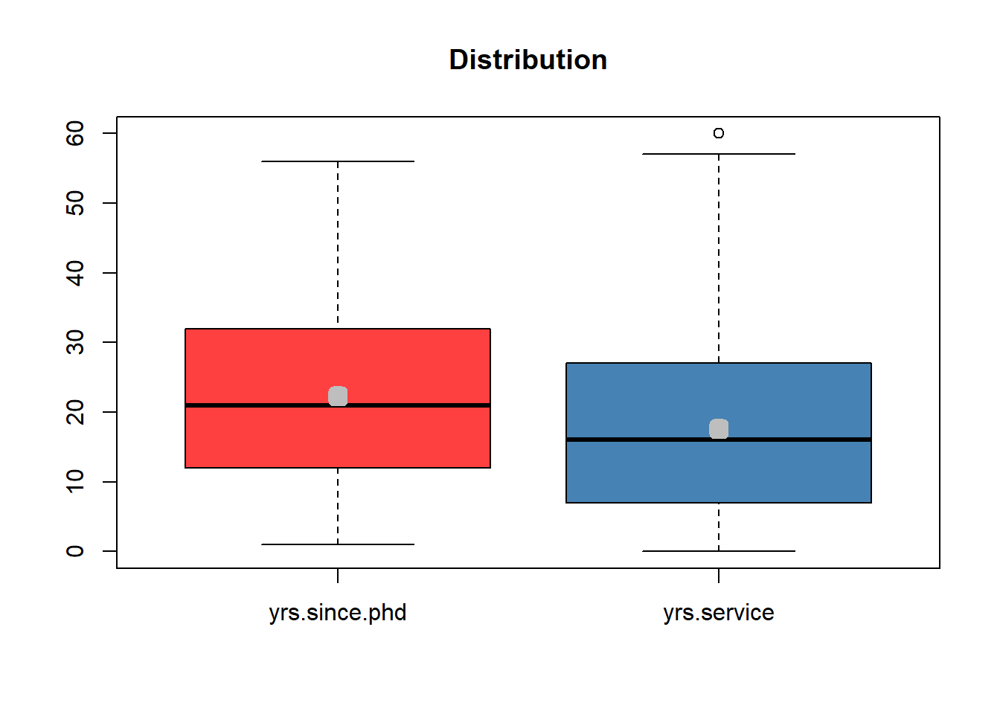

Practical 1: Academic Salary
This practical is based on a demonstration created by Dr. Tatjana Kecojevic, Lecturer in Social Statistics.
For the tasks below, you will require the Salaries dataset. This
dataset is part of the carData R package.
To access the dataset, load the carData package (make sure to first
install the package).
You will also require the GGally package; please make sure to install it.
Salaries is a data frame with 397 observations. This dataset consists of nine-month academic salary for Assistant Professors, Associate Professors and Professors in a college in the U.S to monitor salary differences between male and female faculty members. The data are from 2008-09.
There are six variables:
| Variable Name | Variable Description |
| rank | a factor with levels = AssocProf, AsstProf, Prof |
| discipline | a factor with levels A = theoretical departments) or B = applied departments |
| yrs.since.phd | years since PhD |
| yrs.service | years of service |
| sex | a factor with levels Female and Male |
| salary | nine-month salary, in dollars. |
Let’s first load the packages:
Once you load the carData package, the Salaries dataset will be
‘loaded’ too and can be accessed without needing to assign it to a
separate object.
## rank discipline yrs.since.phd yrs.service sex salary
## 1 Prof B 19 18 Male 139750
## 2 Prof B 20 16 Male 173200
## 3 AsstProf B 4 3 Male 79750
## 4 Prof B 45 39 Male 115000
## 5 Prof B 40 41 Male 141500
## 6 AssocProf B 6 6 Male 97000As usual, we can access variables within the dataset by indexing them.
## [1] 139750 173200 79750 115000 141500 97000 175000 147765 119250 129000
## [11] 119800 79800 77700 78000 104800 117150 101000 103450 124750 137000
## [21] 89565 102580 93904 113068 74830 106294 134885 82379 77000 118223
## [31] 132261 79916 117256 80225 80225 77000 155750 86373 125196 100938
## [41] 146500 93418 101299 231545 94384 114778 98193 151768 140096 70768
## [51] 126621 108875 74692 106639 103760 83900 117704 90215 100135 75044
## [61] 90304 75243 109785 103613 68404 100522 101000 99418 111512 91412
## [71] 126320 146856 100131 92391 113398 73266 150480 193000 86100 84240
## [81] 150743 135585 144640 88825 122960 132825 152708 88400 172272 107008
## [91] 97032 105128 105631 166024 123683 84000 95611 129676 102235 106689
## [101] 133217 126933 153303 127512 83850 113543 82099 82600 81500 131205
## [111] 112429 82100 72500 104279 105000 120806 148500 117515 72500 73500
## [121] 115313 124309 97262 62884 96614 78162 155500 72500 113278 73000
## [131] 83001 76840 77500 72500 168635 136000 108262 105668 73877 152664
## [141] 100102 81500 106608 89942 112696 119015 92000 156938 144651 95079
## [151] 128148 92000 111168 103994 92000 118971 113341 88000 95408 137167
## [161] 89516 176500 98510 89942 88795 105890 167284 130664 101210 181257
## [171] 91227 151575 93164 134185 105000 111751 95436 100944 147349 92000
## [181] 142467 141136 100000 150000 101000 134000 103750 107500 106300 153750
## [191] 180000 133700 122100 86250 90000 113600 92700 92000 189409 114500
## [201] 92700 119700 160400 152500 165000 96545 162200 120000 91300 163200
## [211] 91000 111350 128400 126200 118700 145350 146000 105350 109650 119500
## [221] 170000 145200 107150 129600 87800 122400 63900 70000 88175 133900
## [231] 91000 73300 148750 117555 69700 81700 114000 63100 77202 96200
## [241] 69200 122875 102600 108200 84273 90450 91100 101100 128800 204000
## [251] 109000 102000 132000 77500 116450 83000 140300 74000 73800 92550
## [261] 88600 107550 121200 126000 99000 134800 143940 104350 89650 103700
## [271] 143250 194800 73000 74000 78500 93000 107200 163200 107100 100600
## [281] 136500 103600 57800 155865 88650 81800 115800 85000 150500 74000
## [291] 174500 168500 183800 104800 107300 97150 126300 148800 72300 70700
## [301] 88600 127100 170500 105260 144050 111350 74500 122500 74000 166800
## [311] 92050 108100 94350 100351 146800 84716 71065 67559 134550 135027
## [321] 104428 95642 126431 161101 162221 84500 124714 151650 99247 134778
## [331] 192253 116518 105450 145098 104542 151445 98053 145000 128464 137317
## [341] 106231 124312 114596 162150 150376 107986 142023 128250 80139 144309
## [351] 186960 93519 142500 138000 83600 145028 88709 107309 109954 78785
## [361] 121946 109646 138771 81285 205500 101036 115435 108413 131950 134690
## [371] 78182 110515 109707 136660 103275 103649 74856 77081 150680 104121
## [381] 75996 172505 86895 105000 125192 114330 139219 109305 119450 186023
## [391] 166605 151292 103106 150564 101738 95329 81035However, if we want to access variables within the dataset without
needing to index them we can use the base R attach() function.
So now, we can call on the variables from the dataset directly.
## [1] 139750 173200 79750 115000 141500 97000 175000 147765 119250 129000
## [11] 119800 79800 77700 78000 104800 117150 101000 103450 124750 137000
## [21] 89565 102580 93904 113068 74830 106294 134885 82379 77000 118223
## [31] 132261 79916 117256 80225 80225 77000 155750 86373 125196 100938
## [41] 146500 93418 101299 231545 94384 114778 98193 151768 140096 70768
## [51] 126621 108875 74692 106639 103760 83900 117704 90215 100135 75044
## [61] 90304 75243 109785 103613 68404 100522 101000 99418 111512 91412
## [71] 126320 146856 100131 92391 113398 73266 150480 193000 86100 84240
## [81] 150743 135585 144640 88825 122960 132825 152708 88400 172272 107008
## [91] 97032 105128 105631 166024 123683 84000 95611 129676 102235 106689
## [101] 133217 126933 153303 127512 83850 113543 82099 82600 81500 131205
## [111] 112429 82100 72500 104279 105000 120806 148500 117515 72500 73500
## [121] 115313 124309 97262 62884 96614 78162 155500 72500 113278 73000
## [131] 83001 76840 77500 72500 168635 136000 108262 105668 73877 152664
## [141] 100102 81500 106608 89942 112696 119015 92000 156938 144651 95079
## [151] 128148 92000 111168 103994 92000 118971 113341 88000 95408 137167
## [161] 89516 176500 98510 89942 88795 105890 167284 130664 101210 181257
## [171] 91227 151575 93164 134185 105000 111751 95436 100944 147349 92000
## [181] 142467 141136 100000 150000 101000 134000 103750 107500 106300 153750
## [191] 180000 133700 122100 86250 90000 113600 92700 92000 189409 114500
## [201] 92700 119700 160400 152500 165000 96545 162200 120000 91300 163200
## [211] 91000 111350 128400 126200 118700 145350 146000 105350 109650 119500
## [221] 170000 145200 107150 129600 87800 122400 63900 70000 88175 133900
## [231] 91000 73300 148750 117555 69700 81700 114000 63100 77202 96200
## [241] 69200 122875 102600 108200 84273 90450 91100 101100 128800 204000
## [251] 109000 102000 132000 77500 116450 83000 140300 74000 73800 92550
## [261] 88600 107550 121200 126000 99000 134800 143940 104350 89650 103700
## [271] 143250 194800 73000 74000 78500 93000 107200 163200 107100 100600
## [281] 136500 103600 57800 155865 88650 81800 115800 85000 150500 74000
## [291] 174500 168500 183800 104800 107300 97150 126300 148800 72300 70700
## [301] 88600 127100 170500 105260 144050 111350 74500 122500 74000 166800
## [311] 92050 108100 94350 100351 146800 84716 71065 67559 134550 135027
## [321] 104428 95642 126431 161101 162221 84500 124714 151650 99247 134778
## [331] 192253 116518 105450 145098 104542 151445 98053 145000 128464 137317
## [341] 106231 124312 114596 162150 150376 107986 142023 128250 80139 144309
## [351] 186960 93519 142500 138000 83600 145028 88709 107309 109954 78785
## [361] 121946 109646 138771 81285 205500 101036 115435 108413 131950 134690
## [371] 78182 110515 109707 136660 103275 103649 74856 77081 150680 104121
## [381] 75996 172505 86895 105000 125192 114330 139219 109305 119450 186023
## [391] 166605 151292 103106 150564 101738 95329 81035Part I
Exploring the data
## Rows: 397
## Columns: 6
## $ rank <fct> Prof, Prof, AsstProf, Prof, Prof, AssocProf, Prof, Prof,…
## $ discipline <fct> B, B, B, B, B, B, B, B, B, B, B, B, B, B, B, B, B, A, A,…
## $ yrs.since.phd <int> 19, 20, 4, 45, 40, 6, 30, 45, 21, 18, 12, 7, 1, 2, 20, 1…
## $ yrs.service <int> 18, 16, 3, 39, 41, 6, 23, 45, 20, 18, 8, 2, 1, 0, 18, 3,…
## $ sex <fct> Male, Male, Male, Male, Male, Male, Male, Male, Male, Fe…
## $ salary <int> 139750, 173200, 79750, 115000, 141500, 97000, 175000, 14…We can see that rank, discipline, and sex are already coded as factors. The variables yrs.since.phd and yrs.service are coded as integers.
Our viewpoint states a belief that more years in service will cause higher salary. Let us focus on the mechanics of fitting the model. First we will examine the impact of each individual variable to see if our view point is correct.
We start off with salary vs yrs.since.phd.
## rank discipline yrs.since.phd yrs.service sex
## AsstProf : 67 A:181 Min. : 1.00 Min. : 0.00 Female: 39
## AssocProf: 64 B:216 1st Qu.:12.00 1st Qu.: 7.00 Male :358
## Prof :266 Median :21.00 Median :16.00
## Mean :22.31 Mean :17.61
## 3rd Qu.:32.00 3rd Qu.:27.00
## Max. :56.00 Max. :60.00
## salary
## Min. : 57800
## 1st Qu.: 91000
## Median :107300
## Mean :113706
## 3rd Qu.:134185
## Max. :231545Both explanatory variables, yrs.since.phd and yrs.service have mean and median values that are close to each other. However, the mean and median for the salary variable are quite different.
We can better visualise this using boxplots.
boxplot(Salaries[,3:4], col = c('brown1', 'steelblue'), main = "Distribution")
means <- sapply(Salaries[,3:4], mean)
points(means, col = "gray", pch = 22, lwd = 7)
boxplot(salary, col = c('chartreuse4'), main = "Distributions")
means <- sapply(salary, mean)
points(means, col = "gray", pch = 22, lwd = 7)
What do the box plots indicate?
Salary and Years since PhD
Let’s consider the relationship between yrs.since.phd and salary using a scatterplot onto which we add a line of best fit. Note that since we ‘attached’ the dataset, we can call on the variables without need to index or specify the dataset by name.
plot(salary ~ yrs.since.phd, cex =.6, main = "The Relationship between Nine-month Salary and Years since PhD", xlab = "Years since PhD", ylab = "Nine-month Salary (dollars)")
model1 <- lm(salary ~ yrs.since.phd)
abline(model1, lty = 2, col = 2)
##
## Call:
## lm(formula = salary ~ yrs.since.phd)
##
## Residuals:
## Min 1Q Median 3Q Max
## -84171 -19432 -2858 16086 102383
##
## Coefficients:
## Estimate Std. Error t value Pr(>|t|)
## (Intercept) 91718.7 2765.8 33.162 <2e-16 ***
## yrs.since.phd 985.3 107.4 9.177 <2e-16 ***
## ---
## Signif. codes: 0 '***' 0.001 '**' 0.01 '*' 0.05 '.' 0.1 ' ' 1
##
## Residual standard error: 27530 on 395 degrees of freedom
## Multiple R-squared: 0.1758, Adjusted R-squared: 0.1737
## F-statistic: 84.23 on 1 and 395 DF, p-value: < 2.2e-16What do the results indicate?
Salary and Years of Service
Let’s find out more about the relationship between nine-month salary and years of service.
plot(salary ~ yrs.service, cex =.6, main = "The Relationship between Nine-month Salary and Years of Service", xlab = "Years of Service", ylab = "Nine-month Salary (dollars)")
model2 <- lm(salary ~ yrs.service)
abline(model1, lty = 2, col = 2)
##
## Call:
## lm(formula = salary ~ yrs.service)
##
## Residuals:
## Min 1Q Median 3Q Max
## -81933 -20511 -3776 16417 101947
##
## Coefficients:
## Estimate Std. Error t value Pr(>|t|)
## (Intercept) 99974.7 2416.6 41.37 < 2e-16 ***
## yrs.service 779.6 110.4 7.06 7.53e-12 ***
## ---
## Signif. codes: 0 '***' 0.001 '**' 0.01 '*' 0.05 '.' 0.1 ' ' 1
##
## Residual standard error: 28580 on 395 degrees of freedom
## Multiple R-squared: 0.1121, Adjusted R-squared: 0.1098
## F-statistic: 49.85 on 1 and 395 DF, p-value: 7.529e-12What do the plot and model results indicate?
The Model
Let’s consider both variables (years of service and years since PhD) and whether these help explain salary. We define our multiple linear regression model as:
\[y = b_0 + b_1x_1 + b_2x_2 + e\]
##
## Call:
## lm(formula = salary ~ yrs.since.phd + yrs.service)
##
## Residuals:
## Min 1Q Median 3Q Max
## -79735 -19823 -2617 15149 106149
##
## Coefficients:
## Estimate Std. Error t value Pr(>|t|)
## (Intercept) 89912.2 2843.6 31.620 < 2e-16 ***
## yrs.since.phd 1562.9 256.8 6.086 2.75e-09 ***
## yrs.service -629.1 254.5 -2.472 0.0138 *
## ---
## Signif. codes: 0 '***' 0.001 '**' 0.01 '*' 0.05 '.' 0.1 ' ' 1
##
## Residual standard error: 27360 on 394 degrees of freedom
## Multiple R-squared: 0.1883, Adjusted R-squared: 0.1842
## F-statistic: 45.71 on 2 and 394 DF, p-value: < 2.2e-16Test a): Does the fitted model make sense?
Do the estimated coefficients have the correct sign?
The estimated model of best fit is:
\(salary = 89912.2 + 1562.9yrs.since.phd − 629.1yrs.service\)
We notice that when put together with the variable yrs.since.phd, the yrs.service changes sign, which is not in line with our previously drawn conclusion and the viewpoint. This is the result of collinearity, which you already know happens when two predictors are correlated with one another.
(Multi)collinearity can be identified when:
- a regression coefficient \(x_i\) is not significant even though,
theoretically, it should be highly correlated with the response
variable \(y\);
- by adding or deleting an \(x_i\) variable, the regression coefficients
change dramatically;
- we get a negative regression coefficient when the response should
increase along with \(x_i\), or we get a positive regression
coefficient when the response should decrease as \(x_i\) increases;
- the explanatory variables have high pairwise correlations.
Removing one of the correlated explanatory variables usually doesn’t drastically reduce the \(R^2/R^2adj\).
With this model, using yrs.since.phd and yrs.service variables we have managed to explain just over 18% of variation in the variable salary.
Test b): Overall, is the model a good fit?
\(R^2adj\) is 18.42%, putting this model on the weaker side. However let us go through the formal procedure and set the hypothesis below. The null hypothesis of will be tested using the F-test:
- \(H_0:R^2=0\) (that is, the set of explanatory variables are
insignificant, or in other words: useless)
- \(H_1:R^2>0\) (that is, at least one explanatory variable is significant, or in other words: important)
The decision rule is:
- if \(F_{calc} < F_{crit} => H_0\)
- if \(F_{calc} > F_{crit} => H_1\)
Examining the sample evidence we get that \(F_{calc} = 45.71\). The value for \(F_{crit}\) can be found in the statistical tables for \(df1 = 2\) and \(df2 = 394\).
## [1] 3.018626Since \(F_{crit} = 3.02 < F_{calc} => H_1\), this implies that this is a valid model.
As pointed out earlier, this formal test involves a rather weak alternative hypothesis, which says only that \(R^2\) is significantly bigger than 0. With \(R^2\) of around 18% we can conclude that this is a useful model worthy of further investigation.
Test c): Individually, are the explanatory variables important?
Stage two of our model validation procedure is to examine the importance of any one single explanatory variable used in the fitted model. We have pointed out that just because a set of variables is important does not necessarily mean that each individual variable is contributing towards explaining the behaviour of \(Y\).
We will conduct a set of t-tests to check the validity of each variable one at a time.
\(b_1\): previously we concluded that the relationship between \(x_1\) and \(y\) is positive (in the fitted model parameter \(b_1\) is positive). Consequently, we will use one tail t-test to assess the importance of \(x_1\) in the model.
\(H_0:b_1 = 0\) (explanatory variable \(i\) is not important)
\(H_1:b_1 > 0\) (explanatory variable \(i\) has a positive influence)
whereby:
If \(t_{calc} < t_{crit} => H_0\)
If \(t_{calc} > t_{crit} => H_1\)
## [1] 1.64873\(t_{calc} = 6.09 > t_{crit} = 1.65 => H_1\), which implies that we need to keep x1 in the model.
\(b_2\): previously we concluded that the relationship between \(x_2\) and y is a positive relationship, but the model is suggesting that it is negative. We will stick to our belief and test if the coefficient should be positive:
\(H_0:b_2 = 0\) (explanatory variable \(i\) is not important)
\(H_1:b_2 > 0\) (explanatory variable \(i\) has a positive influence)
whereby:
If \(t_{calc} < t_{crit} => H_0\)
If \(t_{calc} > t_{crit} => H_1\)
## [1] 1.64873\(t_{calc} = −2.47 < t_{crit} = 1.65 => H_0\) therefore, the variable should be removed from the model.
The increase in the explain variation of around 1% is negligible in comparison to the best one factor model \(salary = f(yrs.since.phd) + e\). Hence, we will put forward the model \(salary = 91719 + 985yrs.since.phd\) as our best fitted model.
Alternatively you could test for the coefficient not being equal to zero and make a conclusion for yourself if this would be a sensible thing to do.
In this example, we have adopted a ‘standard’ regression approach that assumes modelling a relationship between quantitative response and only quantitative predictors. However, often when building multiple regression models, we do not want to be limited to just quantitative predictors.
Part II
Now let’s expand our multiple linear regression model with two quantitative variables to a model that also includes categorical variables.
# if you are starting a fresh R session, don't forget to:
# load the package
library(carData)
# attach the dataset
attach(Salaries)In many datasets, categorical (attribute) variables are usually encoded numerically and are accompanied by information about the levels of the variable saved in the levels attribute.
Let’s consider the sex variable.
## $levels
## [1] "Female" "Male"
##
## $class
## [1] "factor"This variable is already coded as a factor with two levels, Female and Male (which you should already know from earlier in the demonstration). Now, what if we want to transform a variable of class factor into one of class integer?
## [1] 2 2 2 2 2 2 2 2 2 1 2 2 2 2 2 2 2 2 2 1 2 2 2 2 1 2 2 2 2 2 2 2 2 2 1 1 2
## [38] 2 2 2 2 2 2 2 2 2 2 1 1 2 2 2 1 2 2 2 2 2 2 2 2 2 2 1 2 2 2 2 1 2 2 2 2 2
## [75] 2 2 2 2 2 2 2 2 2 2 1 2 2 2 2 2 1 2 2 2 2 2 2 2 2 2 2 2 2 1 2 2 2 2 2 2 2
## [112] 2 2 2 1 2 2 2 2 1 2 2 2 1 2 2 2 1 2 2 2 2 1 1 2 2 2 2 2 2 2 2 2 2 2 2 2 2
## [149] 1 2 2 2 2 1 2 2 2 2 2 2 2 2 2 2 2 2 2 2 2 2 2 2 2 2 2 2 2 2 2 1 2 2 2 2 2
## [186] 2 1 2 2 2 2 2 2 2 2 2 2 2 2 2 2 2 2 2 2 2 2 2 2 2 2 2 2 2 2 2 2 2 1 2 2 2
## [223] 2 2 2 2 2 2 2 2 1 1 2 1 2 2 2 1 2 2 2 2 2 2 2 1 2 2 2 2 2 2 2 1 1 2 2 2 2
## [260] 2 2 2 2 2 2 2 2 2 2 2 2 2 2 2 1 2 2 2 2 2 2 2 2 2 2 2 2 2 2 2 2 2 2 2 2 2
## [297] 2 2 2 2 2 2 2 2 2 2 2 2 2 2 2 2 2 2 2 2 1 2 2 2 2 2 2 1 2 2 2 2 2 2 2 2 1
## [334] 2 1 2 2 2 2 2 2 1 2 2 2 2 2 2 2 2 2 2 2 2 2 2 2 2 1 2 2 1 2 2 2 2 2 2 2 2
## [371] 2 2 2 2 2 2 2 2 2 2 2 2 2 2 2 2 2 2 2 2 2 2 2 2 2 2 2
## attr(,"levels")
## [1] "Female" "Male"We can easily do so with the unclass() function which removes the attributes of a factor variable and transforms the levels into numeric values.
However, when using factor variable in a linear regression model, it would make no sense to treat it as a quantitative explanatory variable. In the context of linear modelling we need to code each category to represent factor levels. Two-level attribute variables are very easy to code. We simply create an indicator or dummy variable that takes on two possible dummy numerical values. Consider the sex variable.
We can code this using a dummy variable \(d\):
\[
d = \begin{cases}
0, & \text{if female} \\
1, & \text{if male}
\end{cases}
\]
💡 This is the default coding used in R. A zero value is assigned to the level which is first alphabetically, unless it is changed by using the releveld() function for example, or by specifying the levels of the factor variable specifically.
So, for a simple regression model predicting nine-month salary using one categorical variable:
\[salary = b_0 + b_1sex + e\]
the model is specified as follows:
\[salary_i = b_0 + b_1 sex_i + e_i = \begin{cases} b_0 + b_1 \times 1 + e_i = b_0 + b_1 + e_i, & \text{if the person is male} \\ b_0 + b_1 \times 0 + e_i = b_0 + e_i, & \text{if the person is female} \end{cases}\]
where \(b_0\) can be interpreted as the average nine-month salary for females, and \(b_0 + b_1\) as the nine-month average salary for males. The value of \(b_1\) represents the average difference in nine-month salary between females and males.
We can conclude that dealing with an attribute variable with two levels in a linear model is straightforward. In this case, a dummy variable indicates whether an observation has a particular characteristic: yes/no. We can observe it as a ‘switch’ in a model, as this dummy variable can only assume the values \(0\) and \(1\), where \(0\) indicates the absence of the effect, and \(1\) indicates the presence. The values 0/1 can be seen as off/on.
The way in which R codes dummy variables is controlled by the contrasts option:
## $contrasts
## unordered ordered
## "contr.treatment" "contr.poly"The output points out the conversion of the factor into an appropriate set of contrasts. In particular, the first one: for unordered factors, and the second one: the ordered factors. The former is applicable in our context. To explicitly identify the coding of the factor, i.e. dummy variable used by R, we can use the contrasts() function.
## Male
## Female 0
## Male 1Note that applied contr.treatment conversion takes only the value \(0\) or \(1\) and that for an attribute variable with \(k\) levels it will create \(k-1\) dummy variables. There are many different ways of coding attribute variables besides the dummy variable approach explained here. All of these different approaches lead to equivalent model fits. What differs are the coefficients (i.e. model parameters as they require different interpretations, arranged to measure particular contrasts). This 0/1 coding implemented in R’s default contr.treatment contrast offers straightforward interpretation of the associated parameter in the model, which often is not the case when implementing other contrasts.
Interpreting coefficients of attribute variables
In the case of measured predictors, we are comfortable with the interpretation of the linear model coefficient as a slope, which tells us what a unit increase in the response variable is (i.e. outcome per unit increase in the explanatory variable). This is not necessarily the right interpretation for attribute predictors.
Let’s consider average nine-month salary values for males and females separately.
## # A tibble: 2 × 2
## sex mean
## <fct> <dbl>
## 1 Female 101002.
## 2 Male 115090.If we obtain the mean salary for each sex group we will find that for female professors the average salary is $ $101,002$ and for male professors the average is $ $115,090$. That is, a difference of \(\$14,088\).
If we now look at the parameters of the regression model for salary vs sex where females are coded as zero and males as one, we get exactly the same information, implying that the coefficient is the estimated difference in average between the two groups.
##
## Call:
## lm(formula = salary ~ sex)
##
## Coefficients:
## (Intercept) sexMale
## 101002 14088Fitting a Multivariate Regression Model
In Part I, we explored the extent to which variation in the response variable salary is associated with variation in years since PhD and years in service. Now, we extend the model to also include sex, discipline and rank. The overall goals of any model we construct is that it should contain enough to explain relations in the data and at the same time be simple enough to understand, explain to others, and use.
For convenience we will adopt the following notation:
\(y\): salary
\(x_1\): yrs.since.phd
\(x_2\): yrs.service
\(x_3\): discipline
\(x_4\): sex
\(x_5\): rank
Next, we need to specify the model that embodies our mechanistic understanding of the factors involved and the way that they are related to the response variable. It would make sense to expect that all of the available x variables may impact the behaviour of y, thus the model we wish to build should reflect our viewpoint, i.e. \(y=f(x_1,x_2,x_3,x_4,x_5)\):
\[y=b_0 + b_1x_1 + b_2x_2 + b_3x_3 + b_4x_4 + b_5x_5 + e\] Our viewpoint states a belief that all explanatory variables have a positive impact on the response. For example, more years in service will cause a higher salary.
Our objective now is to determine the values of the parameters in the model that lead to the best fit of the model to the data. That is, we are not only trying to estimate the parameters of the model, but we are also seeking the minimal adequate model to describe the data.
The best model is the model that produces the least unexplained variation following the principle of parsimony rather than complexity. That is the model should have as few parameters as possible, subject to the constraint that the parameters in the model should all be statistically significant.
For regression modelling in R we use the lm() function, that fits a linear model assuming normal errors and constant variance. We specify the model by a formula that uses arithmetic operators which enable different functionalities from their ordinary ones. But, before we dive into statistical modelling of the given data, we need to take a first step and conduct the most fundamental task of data analysis procedure: Get to Know Our Data.

What information can you extract from this visualisation?
Fitting the Model
There are no fixed rules when fitting linear models, but there are adopted standards that have proven to work well in practice. We start off by fitting a maximal model then we carry on simplifying it by removing non-significant explanatory variables. This needs to be done with caution, making sure that the simplifications make good scientific sense, and do not lead to significant reductions in explanatory power. Although this should be the adopted strategy for fitting a model, it is not a guarantee to finding all the important structures in a complex data frame.
We can summarise our model building procedure algorithm as follows:
- Fit the maximal model that includes all the variables. Then, assess the overall significance of the model by checking how big the \(R^2/\overline{R}^2\) is. If statistically significant, carry on with the model fitting procedure, otherwise stop (F-test).
- Remove the least significant terms one at a time. Then, check the \(t_calculated\) for the variables values and perform a one tail or two tail t-test depending on your prior view. If the deletion causes an insignificant increase in \(\overline{R}^2\), leave that term out of the model.
- Keep removing terms from the model until the model contains nothing but significant terms.
Let’s build the model. Now, if we plan to use all variables in a dataset, there is no need to write the names of each individual predictor. Instead, we can use a full stop which tell R to include all other variables in the data object that do not already appear in the formula.
##
## Call:
## lm(formula = salary ~ ., data = Salaries)
##
## Residuals:
## Min 1Q Median 3Q Max
## -65248 -13211 -1775 10384 99592
##
## Coefficients:
## Estimate Std. Error t value Pr(>|t|)
## (Intercept) 65955.2 4588.6 14.374 < 2e-16 ***
## rankAssocProf 12907.6 4145.3 3.114 0.00198 **
## rankProf 45066.0 4237.5 10.635 < 2e-16 ***
## disciplineB 14417.6 2342.9 6.154 1.88e-09 ***
## yrs.since.phd 535.1 241.0 2.220 0.02698 *
## yrs.service -489.5 211.9 -2.310 0.02143 *
## sexMale 4783.5 3858.7 1.240 0.21584
## ---
## Signif. codes: 0 '***' 0.001 '**' 0.01 '*' 0.05 '.' 0.1 ' ' 1
##
## Residual standard error: 22540 on 390 degrees of freedom
## Multiple R-squared: 0.4547, Adjusted R-squared: 0.4463
## F-statistic: 54.2 on 6 and 390 DF, p-value: < 2.2e-16Overall, is the model a good fit? How big is the \(R^2/\overline{R}^2\)? Individually, are the explanatory variables important? What steps are required given the results of the model? What is the structure of the final fitted model and how should the results be interpreted?